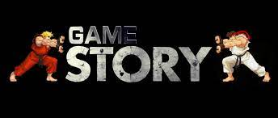

Como en otros videojuegos, los jugadores controlan un avatar dentro de un mundo en una vista de tercera persona (con la opción de jugar en primera persona) explorando el entorno, combatiendo contra varios monstruos y jugadores, completando misiones e interactuando con personajes no jugables (PNJ) u otros jugadores. El completar misiones ayudará a los jugadores a poder subir de nivel y de esta forma, podrán conseguir equipamiento que les ayudará más adelante a combatir a las distintas criaturas que vayan apareciendo en su camino. En común con muchos otros MMORPG, World of Warcraft requiere que el jugador pague una suscripción, sea comprando tarjetas de juego preseleccionado un tiempo de juego, usando una tarjeta de crédito o débito para pagar una cuota regular o comprando una ficha de juego en la subasta por una cantidad de oro que cambia según la oferta y demanda de esta misma.